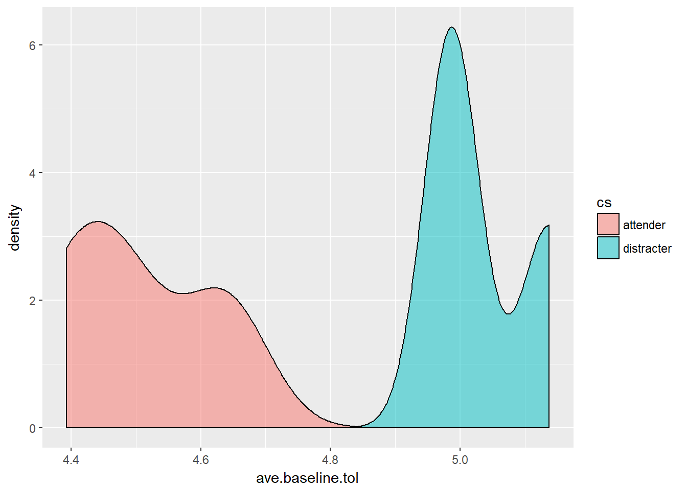
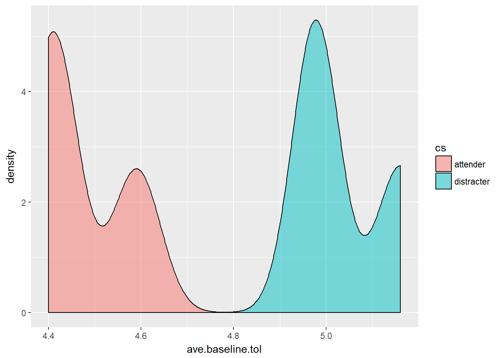

1.3 Analyze pain tolerance across coping style
Visualize the distribution of pain tolerance across the different coping styles.
pt.dist <- ggplot(pain, aes(paintol, fill=cs)) + geom_density(alpha=.5)
l2pt.dist <- ggplot(pain, aes(l2paintol, fill=cs)) + geom_density(alpha=.5)
grid.arrange(pt.dist, l2pt.dist, ncol=2)
There appears to be a slight difference, but is it sigificantly different? Does it change over time? We’ll look at many different ways to approach this question.
1.3.1 Two Sample T-test
Compare pain tolerance across coping styles at each trial.
ggplot(pain, aes(l2paintol, fill=cs)) + geom_density(alpha=.5) + facet_wrap(~trial)
There is a lot of overlap. Which differences are significant? We have no preconceived notion whether or not we can assume equal variances across groups, so we’ll run t-tests under both conditions.
# Make an empty data frame to hold the p-values from the t-tests below.
ttst <- data.frame(eq.var=rep(NA,4), uneq.var=rep(NA,4),
row.names=paste0("Trial", 1:4))
kable(ttst) # what does this look like empty? | eq.var | uneq.var | |
|---|---|---|
| Trial1 | ||
| Trial2 | ||
| Trial3 | ||
| Trial4 |
# loop over 1 to 4 trials, conduct a t.test, extract the p-value and store it into this empty data frame
for(t in 1:4){
ttst$eq.var[t] <- t.test(l2paintol~cs, data=subset(pain, trial==t), var.equal=TRUE)$p.value
ttst$uneq.var[t] <- t.test(l2paintol~cs, data=subset(pain, trial==t), var.equal=FALSE)$p.value
}
kable(ttst, type='html', digits=4,
caption="T-test p-values for a difference between averge pain tolerance across coping style groups") %>%
kable_styling(bootstrap_options = "striped", full_width = F, position = "center") # now it's full| eq.var | uneq.var | |
|---|---|---|
| Trial1 | 0.0524 | 0.0535 |
| Trial2 | 0.0308 | 0.0305 |
| Trial3 | 0.1041 | 0.1049 |
| Trial4 | 0.1121 | 0.1104 |
Conclusion: regardless if we assume equal or unequal variances, there is a difference in the log2 pain tolerance between attending groups during trial 1 and 2 only, not during 3 or 4.
1.3.2 Averaged over the observed baseline values.
Perhaps the difference we’re seeing is due to a difference at baseline between the two groups? Lets compute the baseline average over the first three responses and see if that changes across groups.
baseline <- pain %>% filter(trial < 4) %>%
group_by(cs, trial) %>%
summarise(ave.baseline.tol = mean(l2paintol, na.rm=TRUE))
ggplot(baseline, aes(ave.baseline.tol, fill=cs)) + geom_density(alpha=.5)
Pretty clear baseline difference isn’t it?
pander(t.test(ave.baseline.tol ~ cs, data=baseline))| Test statistic | df | P value | Alternative hypothesis |
|---|---|---|---|
| -6.11 | 3.598 | 0.005095 * * | two.sided |
| mean in group attender | mean in group distracter |
|---|---|
| 4.504 | 5.037 |
Children who distracted themselves from the experiment could keep their arm in the ice water for an average of 5.04 seconds. This was signficantly longer compared to children who attended to the experiment, they averaged 4.5 seconds keeping their arm in the ice water (p=.005).
1.3.3 Missing Data
We noticed earlier that there were some missing values in the data. Turns out that no one dropped out for reasons related to the experiment (i.e. they were uncomfortable), but there were some absences from school that day and a few broken arms.
So far we’ve been ignoring that there is missing data. The table below shows that there are 6 individuals who are missing a score at time 3, but only 3 at time 4. This means that the time-stratified t-tests conducted earlier are on different sets of data.
kable(table(is.na(pain$l2paintol), pain$trial))| 1 | 2 | 3 | 4 | |
|---|---|---|---|---|
| FALSE | 63 | 63 | 58 | 61 |
| TRUE | 1 | 1 | 6 | 3 |
Is it the same individuals who are missing data? First let’s identify the rows with any missing values and save that as a vector of row numbers into miss.idx.
miss.idx <- which(is.na(pain$l2paintol))
miss.idx
## [1] 15 16 71 79 131 132 166 167 168 173 175Then let’s see the id’s for those rows
ids.with.missing <- pain$id[miss.idx]
ids.with.missing
## [1] 4 4 18 20 33 33 42 42 42 44 44There are 6 unique individuals who are missing measurements for pain tolerance. What does their data look like? Half male, half distracters, 3 in the no directions treatment group, 2 in the distraction treatment group, and 1 in the attend group. Understanding the difference in characteristics between those with missing data and those without is important - and a topic we’ll come back to in a later chapter.
kable(pain[pain$id %in% ids.with.missing,c('id', 'cs', 'treatment', 'sex', 'trial', 'paintol' )],
type='html', row.names=FALSE) %>%
kable_styling(bootstrap_options = "striped", full_width = F, position = "center")| id | cs | treatment | sex | trial | paintol |
|---|---|---|---|---|---|
| 4 | distracter | attend | male | 1 | 15.53 |
| 4 | distracter | attend | male | 2 | 22.68 |
| 4 | distracter | attend | male | 3 | |
| 4 | distracter | attend | male | 4 | |
| 18 | attender | no directions | male | 1 | 22.48 |
| 18 | attender | no directions | male | 2 | 20.03 |
| 18 | attender | no directions | male | 3 | |
| 18 | attender | no directions | male | 4 | 26.82 |
| 20 | distracter | no directions | male | 1 | 30.57 |
| 20 | distracter | no directions | male | 2 | 20.29 |
| 20 | distracter | no directions | male | 3 | |
| 20 | distracter | no directions | male | 4 | 11.89 |
| 33 | attender | distract | female | 1 | 35.88 |
| 33 | attender | distract | female | 2 | 53.04 |
| 33 | attender | distract | female | 3 | |
| 33 | attender | distract | female | 4 | |
| 42 | attender | distract | female | 1 | 52.58 |
| 42 | attender | distract | female | 2 | |
| 42 | attender | distract | female | 3 | |
| 42 | attender | distract | female | 4 | |
| 44 | distracter | no directions | female | 1 | |
| 44 | distracter | no directions | female | 2 | 16.75 |
| 44 | distracter | no directions | female | 3 | |
| 44 | distracter | no directions | female | 4 | 14.66 |
What if we just drop all records for all children with missing values at any time point? How does the results here compare to the previous test? First we have to go back and drop these 6 individuals from the data set before we calculate the baseline mean.
base.nomiss <- pain %>% na.omit() %>% filter(trial < 4) %>%
group_by(cs, trial) %>%
summarise(ave.baseline.tol = mean(l2paintol))
ggplot(base.nomiss, aes(ave.baseline.tol, fill=cs)) + geom_density(alpha=.5)
pander(t.test(ave.baseline.tol ~ cs, data=base.nomiss))| Test statistic | df | P value | Alternative hypothesis |
|---|---|---|---|
| -6.615 | 4 | 0.002708 * * | two.sided |
| mean in group attender | mean in group distracter |
|---|---|
| 4.471 | 5.039 |
The average shift a little bit, the bimodality of the distribution of baseline pain tolerance is more clear. The conclusion remains the same however, the p-value was nearly doubled but when it’s already in the third digit, a move from 0.005 to 0.002 does not change your conclusion.
1.3.4 Paired t-test
So far we’ve assumed that pain tolerance within person is independent across time points. That could be an unreasonable assumption, so let’s look at using paired T-tests between time points instead. Since now we’re treating the data as paired, we need the data back into wide format. We’ll apply reshape to the whole data set this time, turning all variables wide. We’ll keep using only the fully complete cases from here on out so that each analyses is on the same set of individuals.
pain.wide <- reshape(pain, idvar="id", timevar="trial", direction="wide") %>% na.omit()
names(pain.wide) # What does this data set look like now?
## [1] "id" "ses.1" "cs.1" "treatment.1" "sex.1"
## [6] "age.1" "paintol.1" "l2paintol.1" "l2.ave.1" "diff.1"
## [11] "ses.2" "cs.2" "treatment.2" "sex.2" "age.2"
## [16] "paintol.2" "l2paintol.2" "l2.ave.2" "diff.2" "ses.3"
## [21] "cs.3" "treatment.3" "sex.3" "age.3" "paintol.3"
## [26] "l2paintol.3" "l2.ave.3" "diff.3" "ses.4" "cs.4"
## [31] "treatment.4" "sex.4" "age.4" "paintol.4" "l2paintol.4"
## [36] "l2.ave.4" "diff.4"Each variable now has 4 entries, one for each time point. Some variables such as cs are time fixed, meaning they don’t change over time; cs.1 = cs.2 = cs.3 = cs=4. Other variables like paintol are time varying, they change within person across time.